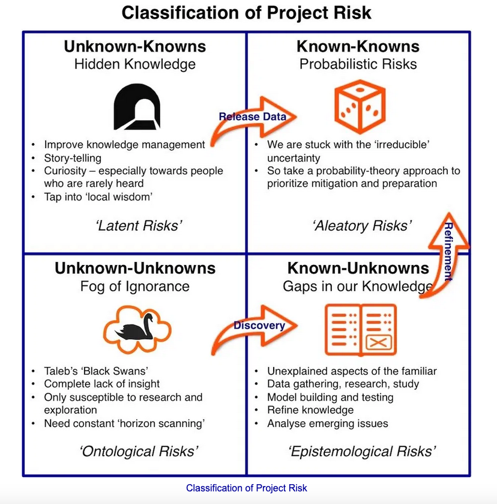
Decisions in the Face of Uncertainty: Probabilistic Thinking, Causality and Belief Networks
The Bayesian statistician Bruno de Finetti (1906–1985) began his book on probability theory with the declaration: “PROBABILITY DOES NOT EXIST” The capitals appeared in the original, so I imagine de Finetti wanted us to shout this statement. What he meant is that probability is a device for describing uncertainty from the perspective of an observer with limited knowledge; it has no objective reality.
- Richard McElreath in "Statistical Rethinking"
Making good decisions in the face of uncertainty is the focus of this week. Statistics and probabilistic thinking can help identify faulty reasoning, overcome bias, and quantify the uncertainty inherent in most real-world decisions. This is the week we study methodologies and computational tools for overcoming the many human cognitive shortcomings. Most of you probably already have a sense of measures like mean and variance using frequency statistics. Our focus, however, extend to Bayesian Statistics, which more naturally maps to our human understanding of uncertainty, risk and decision-making. Probabilistic Programming and Bayesian Statistics may well be two of the most fascinating, practical and underutilized intellectual concepts in our course.
We'll review common errors in which statistical thinking can often mislead, consider the current 'Replication Crisis' in areas like psychology and drug discovery, and consider the impact of statistics on an emerging sense of a "quantified" self. How much of our humanity can be captured in probabilistic statistical models?
Statistics: (MT = Monday/Tuesday)
- ANOVA 1: Visual Displays of Data and Summary Statistics (An Intro to Statistics) Methods Consultants of Ann Arbor (ONLY 0:00-32:15) Dec 2014
- Seeing Theory (Chp 1-2), Brown University 2018 (Print as/Save as PDF the last screen and email to chunj@kenyon.edu as proof of completion. We'll explain the details in class.)
- Simpson's Paradox, Minute Physics (0:00-4:00 ONLY) Oct 2017
- Flipped Class Lecture: Probability (26:00)
Bayes Theorem: (MT = Monday/Tuesday)
- A Visual Guide to Bayesian Theory (11:24) Julia Galef, Jul 2015
- Bayes Theorem (15:45) 3Blue1Brown, Dec 2019
- Seeing Theory (Chp 5), Brown University 2018 (Print as/Save as PDF the last screen and email to chunj@kenyon.edu as proof of completion. We'll explain the details in class.)
- (W = Wednesday except for last 41m video at end)
- An Intro to Probabilistic Programming with Uber's Pyro, Siraj Raval (0:00-5:30, 7:40-8:10 ONLY) Nov 2017
Causality: (RW = Thursday/Wednesday)
- The Danger of Mixing up Causality and Correlation, Ionica Smeets, TEDxDelft (5:56) Nov 2012
- Correlation CAN Imply Causation, Physics Minute (ONLY 0:00-3:00) Aug 2017 + (Footnote 1:25)
- Causality (10:44) Systems Innovations, Sep 2016
- A Friendly Introduction to Bayes Theorem and Hidden Markov Models, Luis Serrano (0:00-20:00 ONLY) Mar 2018
Social Effects: (RF = Thursday/Friday)
- This is How Easy it is to Lie with Statistics (18:30) Zac Star, Feb 2019
- Your Brain is not a Bayes Net, Julia Galef (8:57) Mar 2016
- Superforecasting: How to Predict the Future (Philip Tetlock Book Review) (4:40) Practical Psychology, May 2016
- You're Wrong About More Than You Think (ONLY 6:30-22:00) Zac Star, Jun 2019
- Is Most Published Research Wrong? (12:00) Veritasium, Aug 2016
In Class Demos:
- Multi-Paradigm Programming in Python
- Conditional Probability Visualization, Setosa.io
- Bayesian Event Space Visualization
- Bayesian Updating of Beliefs Visualization
- Slides: Know Confirmation Bias, Framing Effect, Availability Bias, Lake Wobegone Effect/Superiority Bias
- Simple Bayesian Calculator (PSA and Breast Cancer Tests)
- BayesianLab
- Sprinkler Bayesian Networks (Conditional Probability Tables: CPT)
- Covid-19 (fivethirtyeight.com)and Bayesian Risk Model (Kaggle)
Python Programming:
- Introduction to Statistics in Python: Chapter 1: Summary Statistics, DataCamp
Quiz:
- Probability Quiz (Open Thur 6pm EST to Fri 6pm EST)
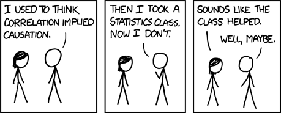
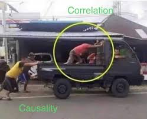
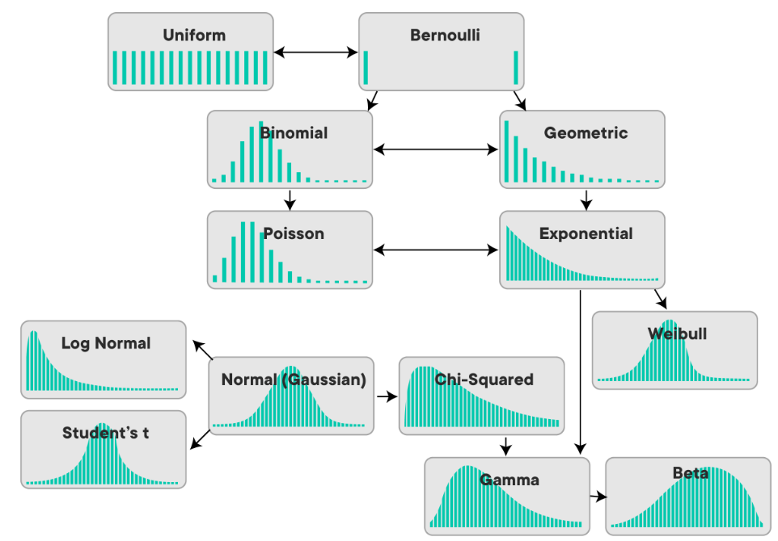
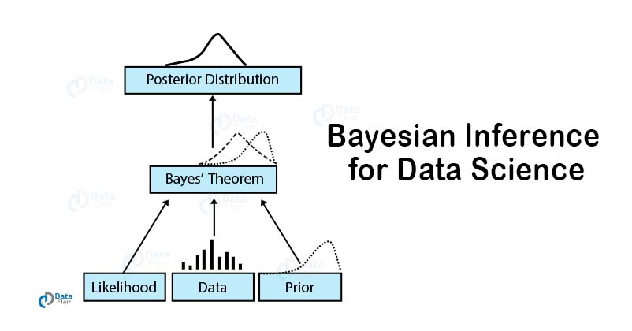
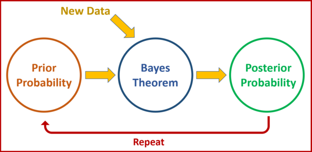
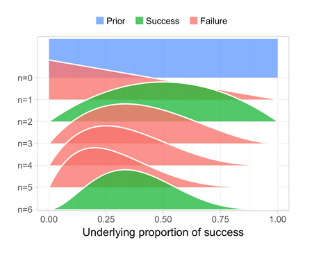
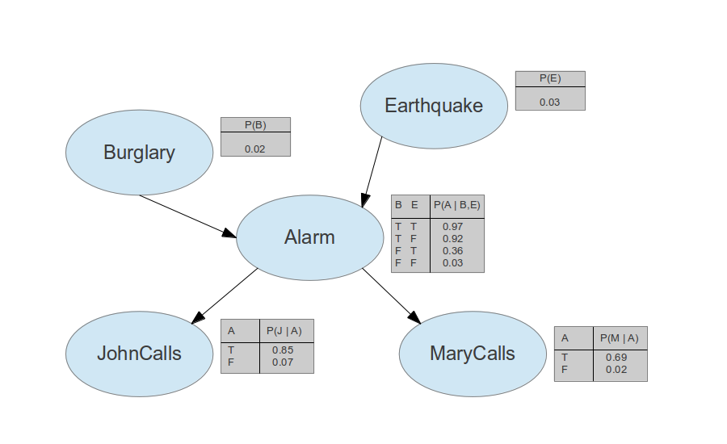
Reference (not on quiz):
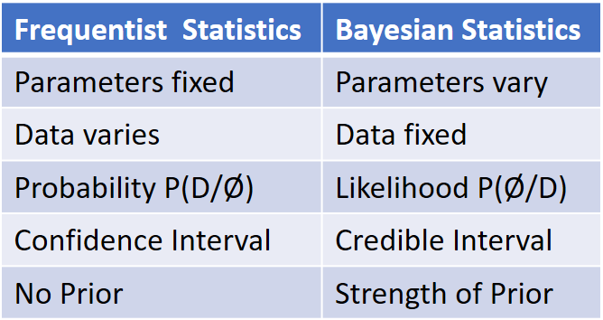
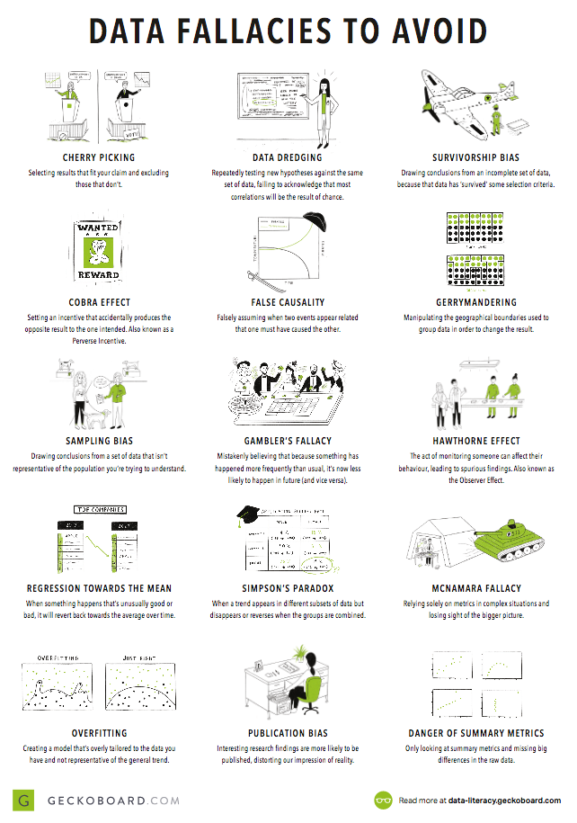
“The strongest predictor of rising into the ranks of superforecasters is perpetual beta – the degree to which one is committed to belief updating and self-improvement. It is roughly three times as powerful a predictor as its closest rival, intelligence.” – Philip E. Tetlock and Dan Gardner

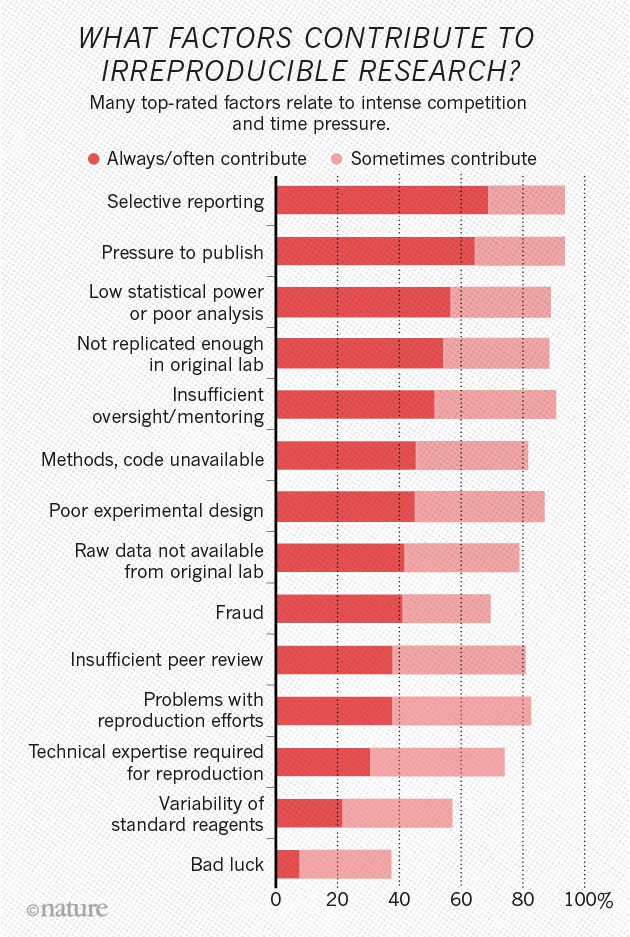